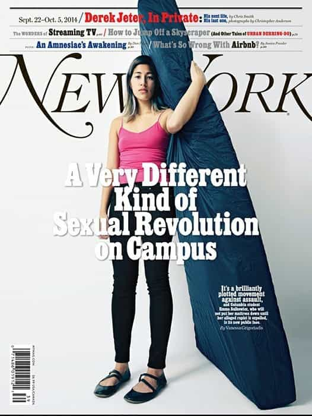

< < < Back
Mattress Girl Emma Sulkowicz Makes A Rape Sex Tape – Return Of Kings
Fresh from her grandstanding during this year’s Columbia University graduation ceremony, Emma Sulkowicz has released a gratuitous “rape sex tape” (nsfw). But hold your horses, guys, because the video portrays consensual sex just acted out as if it were a rape. In the manner of attention-seeking we have all grown used to, the eight minute video features Sulkowicz and a man whose face is blurred out staging the same “trauma”, for the whole internet, that she refused to go to the police about for months.
The “acting” (it deserves a Razzie Award) starts out as consensual and then becomes rougher as it edges towards the imagined “rape” Sulkowicz really wants us to see. She says it isn’t meant to be a reenactment of her (false) rape claim against Paul Nungesser, despite it matching in almost every detail the story she has been aggrandizing, to her economic and social profit, for an eternity.
When the facts don’t support you, make art
Emma Sulkowicz refused to assume the “burden” of going to the police for months, but happily carried around the weight of a massive mattress which everyone could see her trudging along with. Go figure.
At the risk of giving Sulkowicz the page views she desperately craves to shore up her borderline personality disorder-fueled self-esteem gap, I urge you to view the video in its entirety. The website Ceci n’est pas un viol (“This is not a rape”) includes a convoluted and circular “artist’s statement”. Apparently Sulkowicz, the woman who chose to video herself having sex (and carried a mattress around ad nauseam before that), is a victim of our objectification when we watch the footage:
You might be wondering why I’ve made myself this vulnerable. Look—I want to change the world, and that begins with you, seeing yourself. If you watch this video without my consent, then I hope you reflect on your reasons for objectifying me and participating in my rape, for, in that case, you were the one who couldn’t resist the urge to make Ceci N’est Pas Un Viol about what you wanted to make it about: rape.
Our esteemed “friends” at Jezebel are evidently gobsmacked by the video and labeled it “disturbing”. They’re not criticizing the bizarre video (of course they wouldn’t!) but the brief article they released is bereft of the usual fanfare with which feminists have greeted Sulkowicz’s “art piece” harassment of the exonerated Paul Nungesser. It is becoming increasingly hard for the likes of Anna Merlan and Jessica Valenti to defend a woman presenting no evidence of rape but unashamedly capitalizing on every opportunity to advance her own material interests.
Show her the money and recognition
Even more so than before, Sulkowicz is appropriating the mantle of a “rape victim” to try and make a highly profitable, eye-catching art career and celebrity profile. She has been a keynote speaker at numerous events, made the covers of magazines and become an “icon” for feminists fighting for poorly-supported rape claims with no evidence, only “he said, she said”. Senator Kirsten Gillibrand, the best friend of those undermining the court system and subverting due process for men on college campuses, took her as a guest of honor to the State of the Union.
With the seemingly non-artistic Jackie Coakley now eliminated as serious competition for the False Rape Beauty Pageant, Sulkowicz is nonetheless forging ahead, seeking to have her name and appearance carved into the public domain beyond their already mass exposure. This rape sex tape is the second of what is likely to be many “performance pieces” designed to distract attention from the great paucity/non-existence of evidence against Paul Nungesser.
But one big question remains: how can someone who originally didn’t want the “trauma” of a police investigation testing her claims be taken seriously after making glorified rape porn capable of being seen by millions?

What evidence does Emma Sulkowicz actually have against Paul Nungesser?
None. Art is not evidence, even when a mattress-carrying performance is replaced by and morphs into a rape sex tape. The countless feminists and political figures supporting Sulkowicz’s false claims, including Senator Gillibrand, are yet to proffer any details that prove Paul Nungesser is guilty of anything other than the non-crime of having sex with an irretrievably unbalanced young woman. An eight minute crime against filmmaking and ode to narcissism will hinder, not improve their ability to diligently argue on her behalf.
Emma Sulkowicz has become the false rape world’s answer to Sydney Leathers and the second scandal involving ex-Congressman and former NYC mayoral candidate Anthony Weiner.
Moreover, a woman claiming she was raped and then getting unwarranted national media coverage through her art does not constitute proof beyond reasonable doubt. This is especially when you consider the slew of suspicious social media exchanges Sulkowicz had with Paul Nungesser in the months after the night she falsely claims she was raped, messages which demonstrate the effusive praise which she lavished on him and the complete lack of any fissure in their relationship. Or, again, her own stated unwillingness to go through the “ordeal” of a speedy police investigation that would have objectively evaluated her claims.
We should not forget, in addition, that Nungesser was exonerated by even the kangaroo court at Columbia University, which used a preponderance of evidence standard. This standard is actually well below the words used to describe it, as the accuser is excused the cross-examination found in (most) courts and there is almost no non-admissibility restrictions for any factors which favor their story.
SJWs need to own their girl Emma
SJWs gave the Emma Sulkowicz false rape story the oxygen it needed to remove any semblance of fact and evidence as objective criteria, like with most modern-day rape allegations. Rather than recognizing the holes in her story, the social media messages which demonstrated she lusted after Nungesser for months following that night, her refusal to pursue an initial police investigation, or the academic and career opportunism that otherwise accompanied her every move, Emma just had to be true. Like Crystal Mangum’s assertions about the Duke lacrosse players, or Wanetta Gibson’s spiel about Brian Banks, or Jackie Coakley’s “pain” at a frat party that never happened.
As Emma continues to fall on her evidence-less sword with this feminist-personality-cult rape sex tape, and jumps further into the abyss of narcissism and borderline personality disorder, the SJWs who have propped her up incessantly must meet their fate, too. And that is the scorn and ridicule of everyone in this world who believes that serious criminal allegations can only be proven through substantive fact and reasoning.
Art is no substitute for the proper and impartial application of the criminal law. This is a lesson Emma Sulkowicz and her supporters are yet to learn.
Read More: Student Accused Of Rape By Emma Sulkowicz To Sue Columbia University